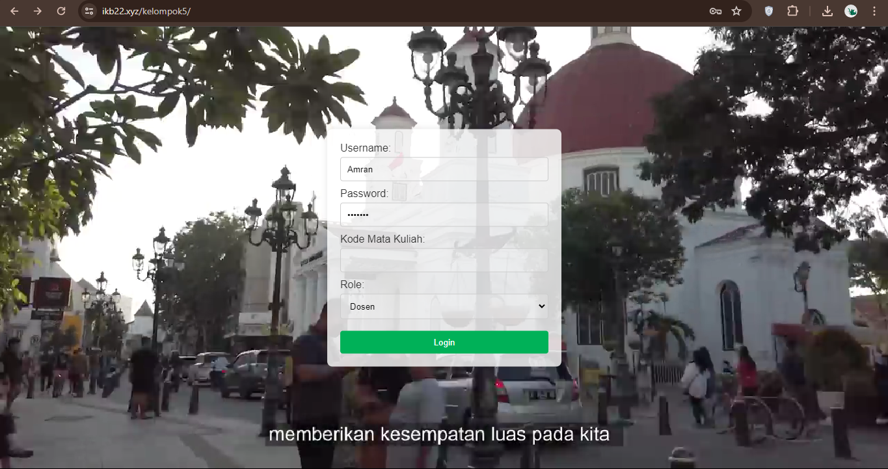
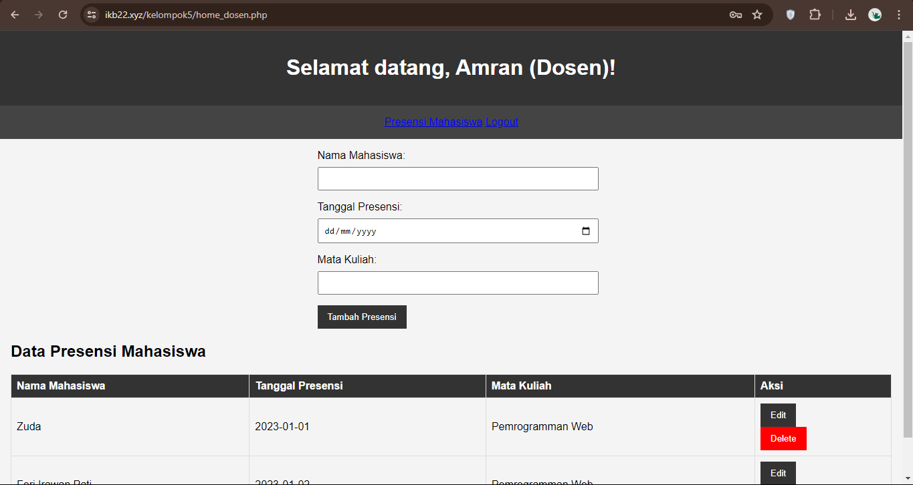
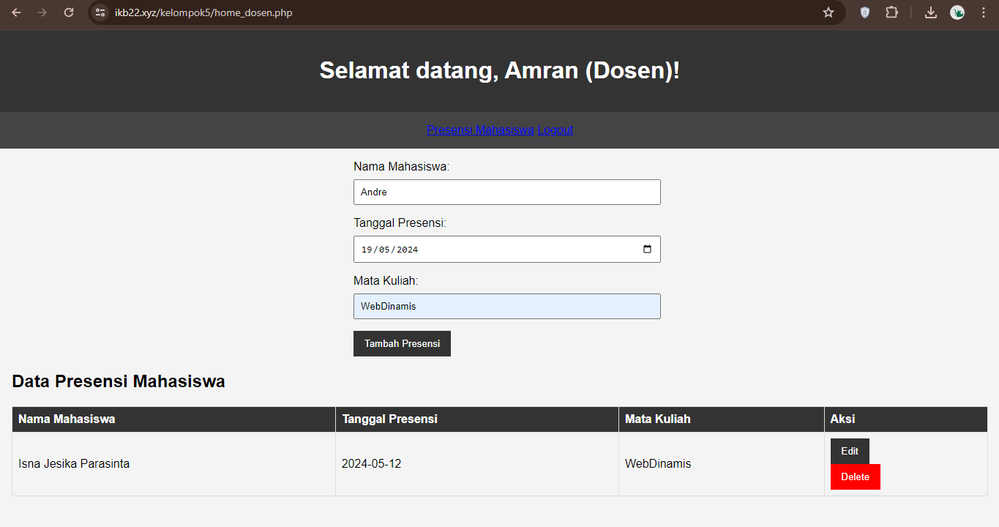
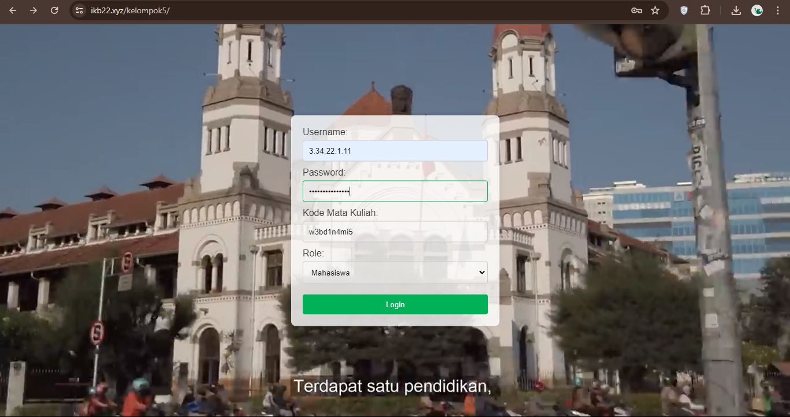
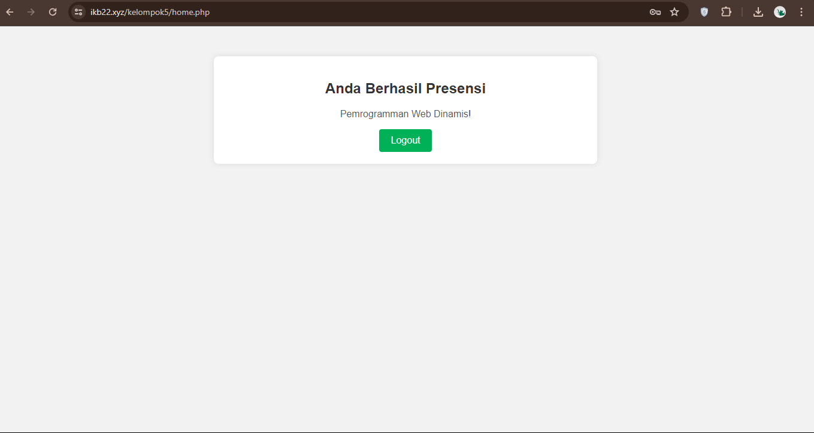

Pengenalan Proyek Website Absensi Mahasiswa dan Dosen
Proyek ini adalah pengembangan sebuah website absensi dinamis yang dirancang untuk memudahkan
proses pencatatan kehadiran mahasiswa dan dosen. Website ini dibuat menggunakan PHP sebagai
bahasa pemrograman utama dan MySQL sebagai sistem manajemen basis datanya.
Fitur Utama:
- Login dengan Dua Peran (Roles):
- Dosen: Dosen dapat masuk ke dalam sistem untuk mengelola absensi.
- Mahasiswa: Mahasiswa dapat masuk ke dalam sistem untuk mencatat kehadiran mereka.
- Pencatatan Kehadiran Mahasiswa:
- Mahasiswa login dengan memasukkan kata sandi dan kode mata kuliah.
- Setelah berhasil, akan muncul pop-up notifikasi yang mengkonfirmasi bahwa absensi telah berhasil
dicatat.
- Manajemen Kehadiran oleh Dosen:
- Dosen dapat melihat rekapitulasi kehadiran mahasiswa.
- Dosen memiliki kemampuan untuk mengedit, menghapus, dan menambahkan data kehadiran mahasiswa.
- Keamanan dan Autentikasi:
- Sistem menggunakan mekanisme autentikasi untuk memastikan bahwa hanya pengguna yang berwenang yang
dapat mengakses fitur sesuai dengan perannya.
- Pelaporan dan Analisis:
- Sistem menyediakan laporan kehadiran yang dapat diakses dan diunduh oleh dosen untuk keperluan
analisis lebih lanjut.
Teknologi yang Digunakan:
- PHP: Digunakan untuk pengembangan backend dan logika aplikasi.
- MySQL: Digunakan untuk penyimpanan dan manajemen data kehadiran.
- HTML/CSS/JavaScript: Digunakan untuk pengembangan frontend dan memastikan antarmuka
pengguna yang responsif dan intuitif.
Proyek ini bertujuan untuk meningkatkan efisiensi dan akurasi dalam pencatatan kehadiran di lingkungan akademis,
memberikan kemudahan bagi mahasiswa dalam mencatat kehadiran mereka, serta menyediakan alat bagi dosen untuk
mengelola dan memantau kehadiran mahasiswa secara efektif.




